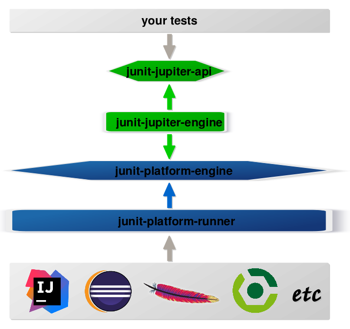
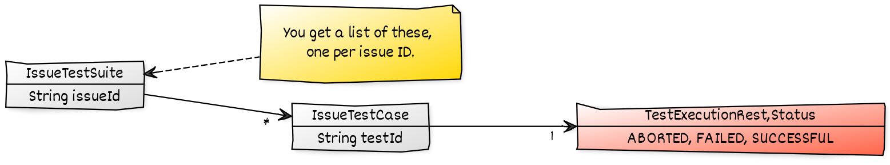
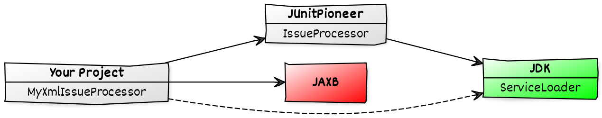

class JUnit5Test {
@Test
void test() {
assertTrue(true);
}
}To Jupiter And Beyond
On An Exploratory Mission With JUnit Pioneer
Developer Advocate
Java Team at Oracle
JUnit Pioneer
JUnit Pioneer — junit-pioneer.org:
provides extensions for JUnit 5 and its Jupiter API
small project (18.1k lines of code, 5 maintainers)
Why is it interesting?
JUnit 5 is thrilling
grew a (small) community on Twitch
neat build and Git practices
one-click releases
automatic website build
Table of Contents
JUnit 5 and its extension model
Pioneer’s extensions, mission, and history
how live-streaming grew a community
organizational style and contribution guide
architecture and dependency management
building with quality control and
on multiple Java/JUnit versions and OSone-click releases
website build
JUnit Extensions
Crash course to JUnit 5 and
its extension model.
(This is very incomplete!
More in the user guide or this article.)
JUnit 5
A simple test:
need an API to write tests against
need an engine that executes them
Separation Of Concerns
Separation of concerns in JUnit 5:
an API to write tests against
an API to discover and run tests
specific engine per variant of tests
(e.g. JUnit 4 or JUnit 5)orchestration of engines
API between them
Architecture

JUnit Jupiter
defines test API
defines extension API
contains engine for them
Often referred to as "JUnit 5".
Extension Model
Jupiter allows seamless extensions:
@Test
@DisabledOnFriday
void failingTest() {
assertTrue(false);
}Cornerstones:
extensions interact with extension points
extensions must be registered
(possibly with annotations)
Extension Points
An incomplete list:
instance post processor
@BeforeAlland@BeforeEachexecution condition
exception handling
@AfterEachand@AfterAll
Each represented by an interface,
e.g. ExecutionCondition.
Extension Example
How to disable tests on Friday:
public class DisabledOnFridayCondition
implements ExecutionCondition {
@Override
public ConditionEvaluationResult evaluate(/**/) {
if (isFriday())
return ConditionEvaluationResult
.disabled("Weekend! 🕺🏾💃🏼");
else
return ConditionEvaluationResult
.enabled("Run the test 😬");
}
}Registering Annotations
Jupiter is aware of meta annotations.
⇝ We can create our own annotations!
// [... more annotations ...]
@ExtendWith(DisabledOnFridayCondition.class)
public @interface DisabledOnFriday { }
@Test
@DisabledOnFriday
void failingTest() {
assertTrue(false);
}Pioneer Extensions
An incomplete list:
Cartesian products for parameters
set default locale
set system properties
publish issue information
retry failed tests
Let’s see some incomplete examples!
Cartesian Product
@CartesianTest
void testIntChars(
@Values(ints = { 1, 2, 4 }) int number,
@Values(strings = { "A", "B" }) String character) {
// (1, "A") (1, "B") (2, "A") (2, "B") (4, "A") (4, "B")
}Default Locale
@Test
@DefaultLocale(language = "en")
void test() {
assertThat(Locale.getDefault())
.isEqualTo(new Locale("en"));
}System Properties
@Test
@ClearSystemProperty(key = "user.name")
@SetSystemProperty(key = "user.dir", value = "...")
void test() {
assertThat(System.getProperty("user.name"))
.isNull();
assertThat(System.getProperty("user.dir"))
.isEqualTo("...");
}Issue Information
Mark tests that belong to issues:
@Test
@Issue("REQ-123")
void test() {
// a test for the issue "REQ-123"
}Process information after execution:

Retrying Tests
@RetryingTest(3)
void test() {
// if 1st, 2nd, or 3rd execution passes,
// the test passes; otherwise fails
}Others
We have a few more:
ranges for parameters
set default time zone
set environment variables
disable specific parameterized tests
publish report entries
mocking standard I/O
Isn’t this all a bit random?
⇝ Yes!
JUnit Pioneer
Mission statement:
JUnit Pioneer provides extensions for JUnit 5 and its Jupiter API. It does not limit itself to proven ideas with wide application but is purposely open to experiments. It aims to spin off successful and cohesive portions into sibling projects or back into the JUnit 5 code base.
JUnit Pioneer
We want to:
provide helpful extensions
be open to experimental ideas
catch-all extensions that are too small
to be their own project
JUnit Pioneer
We are:
Daniel Kraus — Jack of All Trades
Matthias Bünger — Bishuemaster
Mihály Verhás — Chief Developer
Nicolai Parlog — Benevolent Dictator
Simon Schottner — Build Engineer
Plus about a dozen contribtors,
some of them recurring.
JUnit Pioneer
We have:
7.5k lines of production code
9.5k lines of test code
1.1k lines of demo code
35 releases, 14 since 1.0.0
Java 8 as requirement
Java 9-18 supported
How did we get here?
Sounds good? Not so fast!
this is a hobby project
life gets in the way
for 3 years, little happened
Experimentation
- 2016:
JUnit 5 publishes first milestone builds
Nicolai launches JUnit Io for his
experiments with the extension API
A melting pot for all kinds of extensions
Just a demo repo, no releases:
⇝ 18 commits, 1.3k LOC, 300 LOX
Excitement
- 2017:
JUnit 5 publishes release candidates
and in September 5.0.0Steve Moyer plans to roll his own
experiments into a projectNicolai and Steve join forces and
rebrand JUnit Io to JUnit Pioneer
(first space craft to Jupiter)
Turning it into an actual project:
⇝ 19 commits, -12 LOC 🤔, 430 LOX, 0 releases
😴
- September 2017 to April 2018:
Steve is busy teaching
Nicolai always has more projects than time
⇝ 0 commits, 0 LOC/X, 0 releases
Takeoff
- May to November 2018:
JUnit 5 team helps Nicolai
Pioneer lifts off the ground
⇝ 31 commits,
870 LOC, 450 LOX,
4 contributors,
4 releases
😴😴
- November 2018 to September 2019:
again, life gets in the way
⇝ 0 commits, 0 LOC/X, 0 releases
Cruise control
- October 2019 to mid 2021:
JUnit 5 team gives ultimatum
magic happens 🧙♀️🦄✨
Pioneer flies at steady pace
⇝ ~170 commits,
8.4k LOC, 1.9k LOX,
4 maintainers, 15 contributors,
29 releases
Wait, Magic?
Twitch
- 2019
Nicolai discovers Twitch
does a few live streams in spring
decides to stream regularly in December
- 2020
30 JUnit Pioneer streams
usually 3 to 5 hours
Twitch
Expected effects:
commits Nicolai to ~10 h/month for Pioneer
interests Java devs
Twitch
Unexpected effects:
gives viewers insight into project
viewers help in their areas of expertise
in Twitch chat
on GitHub
viewers pick up small issues
viewers become contributors
contributors become maintainers
Twitch
Thanks to live-streaming, we became a small community.
In November 2020, we got together for donations:
Twitch sub money + individual donations
570 EUR to Climate Action Fund and DKMS
Looking forward to meet for drinks.
🍺🍹🥛🥃
Twitch
Thanks to live-streaming, this one-man show,
became a real project:
in April 2020, Simon and Matthias
became maintainersin November 2020, Mihaly joined
in June 2021, Daniel joined
A few contributors also stop by the stream
(and always enjoy when Nicolai reviews their PRs).
Project Management
communication & prioritization
doing the dirty work
fostering contributions
managing expectations
Contributing Without Coding
Once a repo turns into a project,
project management becomes essential.
There’s plenty of ways of
contributing without coding.
These contributions are often
more important than code.
Contributing Without Coding
curating issues
creating, labeling, replying, closing
prioritizing, organizing
reviewing PRs
technical merits
completeness
following up on uncomfortable tasks
remembering/updating documentation
Dirty work
Coding is fun! Cleaning up (often) isn’t.
As a maintainer:
fix bugs first
tackle the hard issues
(annotations, threading, merge conflicts)set up build pipeline, releases,
documentation, website, etc.
We created milestone Cleaner Pioneers for that.
Preparing 1.0
Spring 2020 we started thinking about 1.0,
but Pioneer has no cohesive feature set.
⇝ there’s no good point for 1.0
Instead, prepare everything for users and contributors.
⇝ Cleaner Pioneers became 1.0
Since Then
Pioneer still has no cohesive feature set
all must-dos are done (for the time being)
⇝ Milestone is wrong concept.
So now we use a Kanban board
(via GitHub’s Projects feature).
Pull Requests
Noteworthy details about PRs:
checklist
approval
squash & merge
Approving Pull Requests
Two maintainers need to approve a PR.
Lack of trust?
No, sharing responsibility.
(More on that later.)
Squashing Commits
When a PR is ready to be merged:
all commits are squashed into one
commit message is carefully crafted
that commit goes onto
main
Squashing Commits
"But don’t you lose the history?"
Yes!
lets contributors use Git however they like
keeps commit history clean
leads to really good commit messages
(prepared as part of the PR)
Fostering Contributions
appreciation
contribution guide
explicit rules
(preferably simple)
Appreciation
We’re appreciative:
positive tone
prioritize replies
thank for contributions,
excuse delayslist contributions
Contribution Guide
We have a (very long) CONTRIBUTING.md:
describes all aspects in detail
binds maintainers and contributors
grew organically over time
(more in a few slides)
Contribution Guide
A partial table of contents:
open source crash course (mostly links)
code organization and style (more in next section)
how to document: what goes where, style, etc.
contribution workflow: branching, PRs, merging, etc.
dependencies
versioning
communication
Simplicity
Some rules are intenionally strict
to keep them simple and avoid discussions:
always use AssertJ
always use
Optionalalways squash commits
always apply naming rules
Consistency is king, simplicity is King Kong.
Communication Guide
Various channels by decreasing importance:
project website
files (e.g.
CONTRIBUTING.md)Git commit messages
issues/PRs on GitHub
#junit-pioneer in Discord
team calls
Twitch streams
We always push communication up the list as far as possible.
Protecting Maintainers
There’s no expectation of availability! This applies to users opening issues, contributors providing PRs, and other maintainers - none of them can expect a maintainer to have time to reply to their request.
Sharing Responsibility
Struggle for newest maintainers:
first open source project
project pre-existed
worried to break things
Solution:
two maintainers sign off PRs
Nicolai is the benevolent dictator
Benevolent Dictator
Nicolai has special…
privilege — can overrule anything
duty — should’ve prevented all mistakes
Writes Nicolai:
I bare responsibility for all mistakes. (Moral responsibility, that is - legally, nobody has any responsibility. 😉)
Project Management
As you can see, quite a lof of
project and team management.
Many ways to contribute without coding.
Coding
architecture
dependency management
how to test a test framework
Architecture
JUnit Pioneer has high-end architecture:
📦 org.junitpioneer
├─ 📦 internal # our utilities - internal
├─ 📦 jupiter # most of our extensions
│ ├─ 📦 cartesian # cartesian extensions
│ ├─ 📦 issue # issue impl - internal
│ ├─ 📦 json # JSON-related extenions
│ └─ 📦 params # parameterized tests ext.s
└─ 📦 vintage # JUnit 4 extensionsWe mirror Jupiter’s packages:
org.junit.jupiter.apiorg.junit.jupiter.params
Internal packages
Speaking of internal packages:
we created two (e.g. for annotations)
we don’t want people to use them
How?
⚠️ one package is called
internal⚠️ package info says it’s internal
🛑 we ship modular JAR that
doesn’t export these packages
More Architecture
To make navigation easier,
we also have rules for:
naming classes
organizing top-level types
(e.g. repeatable annotations)how to use Jupiter’s
Namespace
No rocket science, but need to be upheld.
Dependency Management
Projects have enough problems
with dependencies.
We don’t want to add to that.
⇝ JUnit 5 should be our only
run-time dependency.
In Practice
The @Issue extension:
collects information about tests
wants to create a report
But reports could be XML, JSON, etc.
"need" dependencies for that
probably not many users use
@Issue
What now?
Resolution
Dependency inversion to the rescue
(via Java’s ServiceLoader):
Pioneer declares interface
IssueProcessorusers implement it and register implementation
Pioneer finds implementations and passes info

Tests²
How do you test a test framework?
want to verify error behavior
want to test behavior outside of tests
(e.g. report entry publication)
We often write tests that run other tests
and then evaluate their results.
Tests²
JUnit Jupiter has good support for that:
we added a few usability methods
we created our own assertions
ExecutionResults results = executeTestMethod(
MethodLevelInitializationFailureTestCase.class,
"shouldFailMissingConfiguration");
assertThat(results)
.hasSingleFailedTest()
.withExceptionInstanceOf(/*...*/);Tests²
Thread safety:
all our extensions should be thread-safe
to test that, we run our tests in parallel
that’s not always fun
We’re mostly sure, we got this. 😬
Building
quality control
compatibility
one-click releases
website build
Build Pipeline
build project with Gradle (Kotlin style)
trigger build on commit with GitHub Actions
kick off release build on GitHub
trigger website build
Quality Control
Code style:
we want a uniform code style
we don’t want to manually
discuss or enforce it
So we let Spotless
and Checkstyle
break the build on violations.
Quality Control
Code quality:
we want to avoid pitfalls and gotchas
we want high test coverage
we know better than any tool 😁
We use SonarQube
to analyze and report.
Version Control
Build against:
range of operating systems
range of Java versions
as module and not
range of JUnit versions
All with GitHub Actions.
Version Control
strategy:
matrix:
java: [ 11, 17, 18 ]
junit-version: [ '5.8.2' ]
modular: [true, false]
os: [ubuntu, macos, windows]One-Click Releases
One-Click Releases
The release build:
takes manually entered version as input
builds artifacts with Gradle
publishes with
maven-publishpluginuses Shipkit to:
create Git tag
create GitHub release with changelog
Website build
Last step triggers website build:
pulls in all projects
builds website with docs
pulls version(s) from files
builds website with Jekyll
That was JUnit Pioneer
From code to community, from planning to building
we hope you saw something interesting!
To follow up:
visit junit-pioneer.org
come to github.com/junit-pioneer
watch nipafx on Twitch
tweet @nipafx (DMs open)
join our Discord
So long…

More
Slides at slides.nipafx.dev⇜ Get my book!
Follow Nicolai
nipafx.dev/nipafx
Follow Java
inside.java // dev.java/java // /openjdk